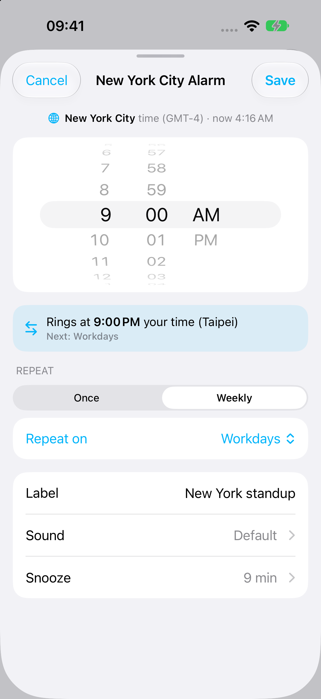

The iPhone alarm app for shift work, specific dates and other time zones
Alarms for
real life.
Alarm One for iPhone follows your shifts, future dates, and cities, with a sound you choose.
Free to download. iOS 26 or later.



Your next 30 days
Day 1 – Day 30
- 1Work
- 2Work
- 3Work
- 4Work
- 5Rest
- 6Rest
- 7Rest
- 8Work
- 9Work
- 10Work
- 11Work
- 12Rest
- 13Rest
- 14Rest
- 15Work
- 16Work
- 17Work
- 18Work
- 19Rest
- 20Rest
- 21Rest
- 22Work
- 23Work
- 24Work
- 25Work
- 26Rest
- 27Rest
- 28Rest
- 29Work
- 30Work
4 work days, then 3 rest days. 18 alarms in the next 30 days, at 07:00.
A schedule preview. Create and save your alarm in Alarm One.
Your cycle. Your alarm.
Rotating shift alarms: set 4 on 4 off, 2 on 2 off or any work/rest cycle
A shift pattern keeps going when the week ends. Choose your first work date and the days that follow it.
Their time. Your alarm.
Set an alarm in another city's time zone
9 AM in New York. Whatever that means where you are.
Choose a city, set its local time, and see your own time before you save. Alarm One handles time zones and daylight saving.
City-based alarms require Pro.
Time zone alarm guide →Make room for life.
What the iPhone Clock app can't do
That early flight. The exam next month. Set an alarm for a specific future date and find it in your calendar.
For a nap, a trip, or a one-off plan, enable delete after ringing. Used alarms leave your list.
Choose a built-in tone or import an MP3, WAV, AIFF, CAF, or M4A from Files. Custom import requires Pro and iOS 26.1 or later.
Separate alarms into groups, review upcoming dates in the calendar, and keep your setup in sync with iCloud.

Before you set it.
Alarm One FAQ
Alarm One requires iOS 26 or later. City alarms need Pro; importing your own audio needs Pro and iOS 26.1 or later. Visit support for setup help.
How is Alarm One different from the built-in Clock app?
Alarm One adds work/rest rotations, every-N-weeks, monthly and yearly repeats, specific dates, alarms in another city's time, skip next, alarm groups, delete after ringing, custom sounds, calendar views, widgets and iCloud sync.
Can I set an iPhone alarm for a specific date?
Yes. In Alarm One, create an alarm that rings once, enable Specified Date, and select the future date and time. The regular Clock alarm editor offers times and weekday repeats.
How do I automatically delete alarms after they ring?
Create a temporary alarm in Alarm One and enable “Delete this alarm after it rings.” This removes that Alarm One alarm after use; it does not delete entries from Apple’s Clock app.
Can I import a custom alarm sound without GarageBand?
Yes. With Alarm One Pro on iOS 26.1 or later, import a playable MP3, WAV, AIFF, CAF, or M4A file from Files, select it in the sound picker, and save the alarm.
How do world clock alarms work?
Choose a target city and set its local time in Alarm One. The app calculates the local equivalent using the city’s time zone and daylight saving rules.
Can Alarm One handle rotating shifts?
Yes. Choose Workday → Rotation, set the first work date, and enter the consecutive work and rest day counts. For changing start times or irregular rosters, use separate specified-date alarms.
Can I skip just the next alarm without turning it off?
Yes. In Alarm One you can skip the next occurrence of a repeating alarm, for example for a public holiday, and it rings again as normal after that.
Can I set a monthly or yearly alarm?
Yes. Alarm One repeats alarms monthly (on a day of the month) or yearly (on a date), as well as on workdays, weekdays, weekends or once.
Can I turn off a group of alarms at once?
Yes. Put alarms in a group, then turn the whole group on or off, or skip it, in one step.
Do Alarm One alarms sync to my iPad and Mac?
Yes. Alarm One syncs alarms with iCloud across iPhone, iPad and Mac.
A little more
on time.
For work days, faraway cities, and plans you only make once. Put your next alarm in Alarm One.